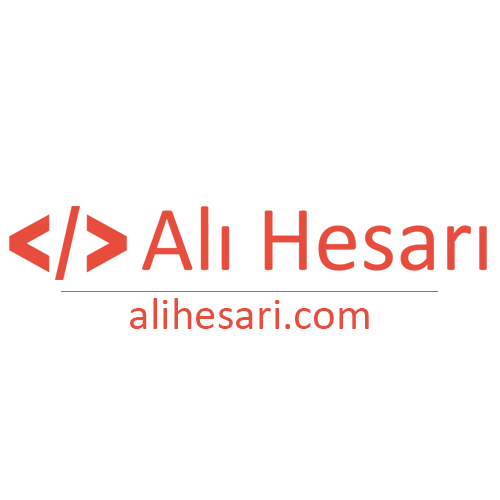

بازهم شروعی دوباره!
 سلام این آغاز یکم فرق میکنه. بعد از یک سال کار مداوم فرصت شد سر و سامونی به وبلاگم بدم و یک لوگو و قالب مناسب که حداقل خودم راضی باشم براش آماده کنم. یک سال مدت زیادیه ولی اگه مثل من بی برنامه باشید زود میگذره!
قصد دارم از تجربیات خودم بنویسم برای موضوعاتی که خودم هم خیلی علاقه دارم در موردش صحبت کنم:
چطور برنامه نویس شدم؟
طعم کار فریلنسری (برنامه نویسی آزاد) چطور بود؟
طعم کارمندی چطور بوده؟
و…
امیدوارم شروع خوبی باشه.